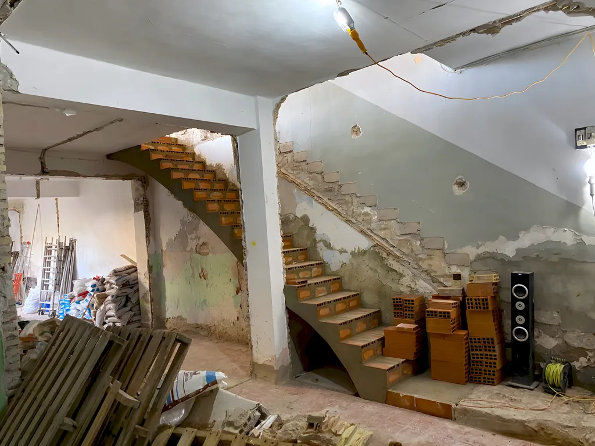

- Inicio
- Bioconstrucción
Escaleras Clavel · Cal y ladrillo
Bioconstrucción
La bioconstrucción es una forma de edificar con poco impacto ambiental y materiales que respetan a quien vive en la casa. No es nada nuevo: nuestros antepasados ya construían casas confortables y resistentes con piedra, madera y barro.
Estucos y morteros de calBarnices naturalesPinturas al silicatoLadrillo
Materiales que usamos
- Estucos y morteros de calEn lugar del cemento.
- Barnices naturalesPara proteger sin químicos agresivos.
- Pinturas al silicatoEn lugar de las pinturas derivadas del petróleo.
- LadrilloEl material de siempre de nuestras escaleras y bóvedas.
Viviendas saludables
Los materiales no son tóxicos: es más sano para quien construye la obra y para quien vive en ella. Además, ahorra energía y mantenimiento.
En obra y terminadas
Escaleras a medida